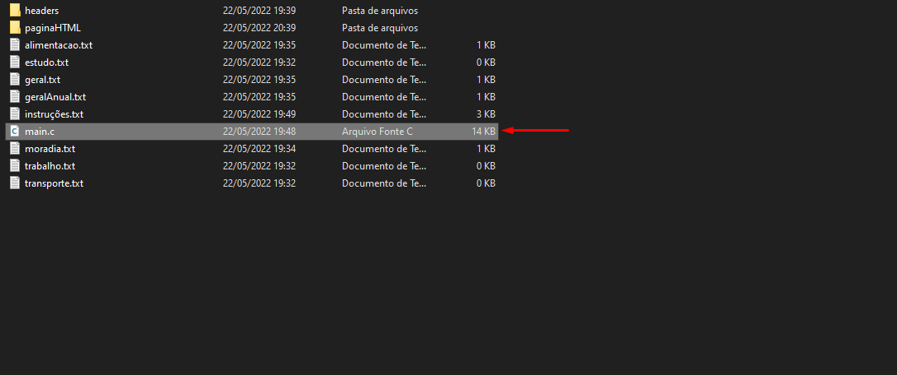
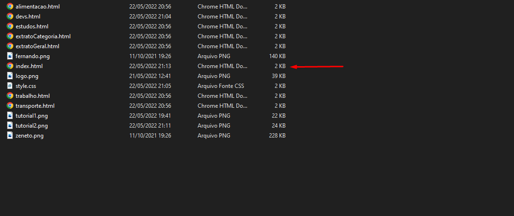

Financial Manager
How to use the Financial Manager?
Obs: open and read the "readme.txt" before continuing.
Obs 2: the existing records in the ".txt" files are test only, edit it as you like.
Instructions
1 - Run the "main.c" file.

2 - Register all the information you want.
3 - Open the "index.html" file, inside the "paginaHTML" folder.

4 - Navigate through the menu to view your extract.